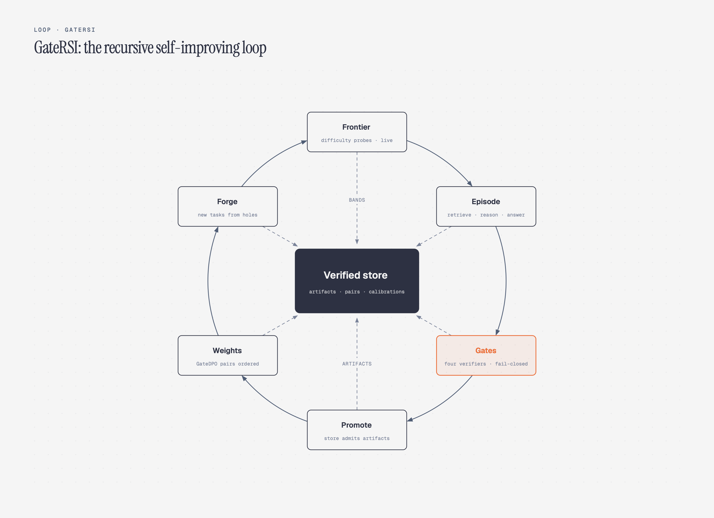
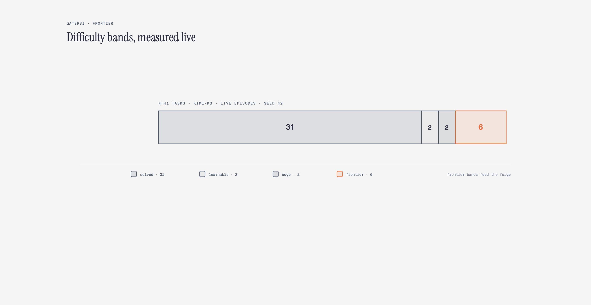
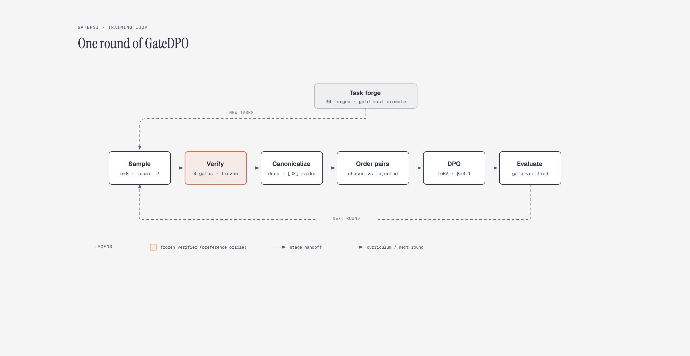
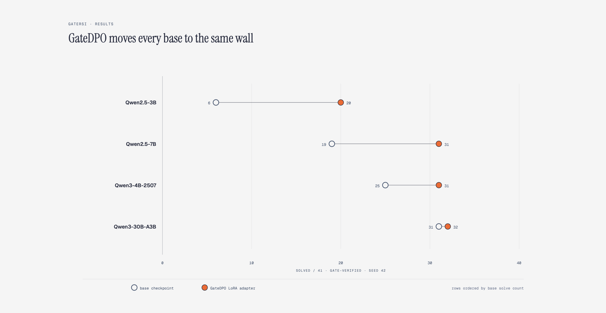
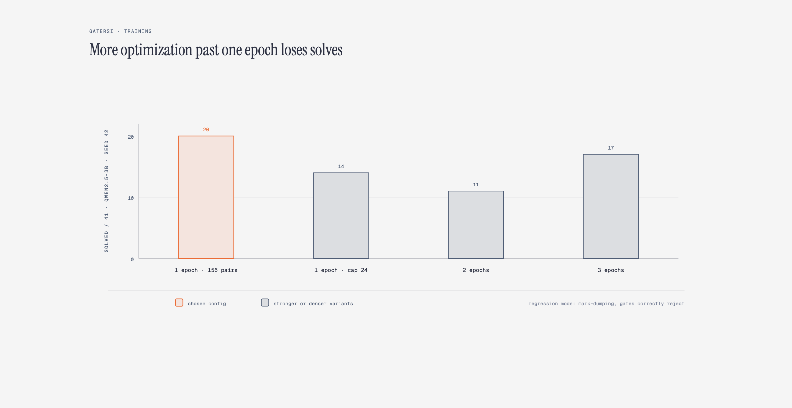
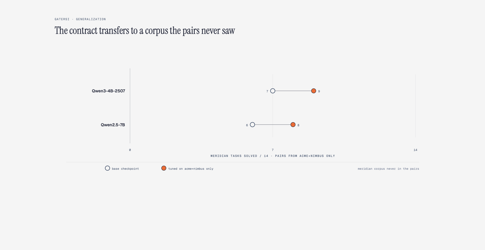
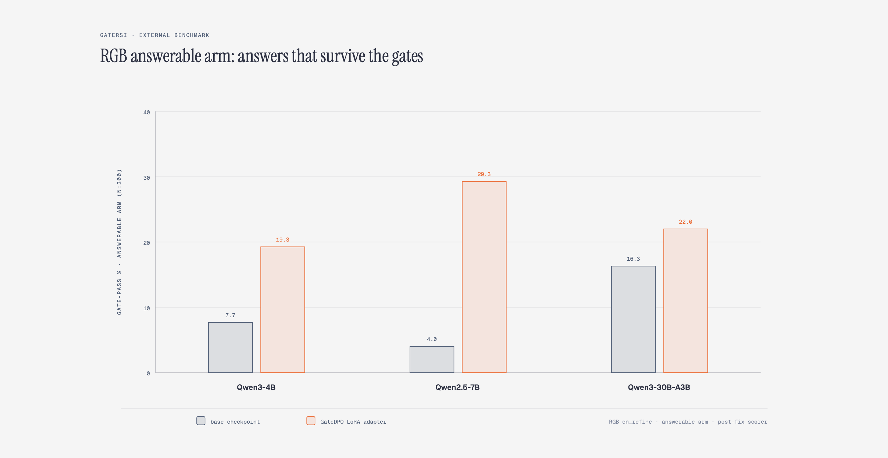

I introduce GateRSI, a system in which a question-answering agent improves itself on three surfaces at once, and every surface is ordered by the same deterministic verifier. The verifier is a fixed pipeline of four gates that checks whether an episode really retrieved, whether every claim it asserts is supported by what it cited, whether its citation marks resolve, and whether the answer is in the state the task requires. Around that verifier I built three loops: 1) a verified experience store that distills promoted episodes into reusable artifacts and applies them to future prompts, 2) a task frontier that measures difficulty bands under live rollouts and a forge that generates new tasks where the agent is weak, and 3) GateDPO, which turns gate verdicts into preference pairs and trains a LoRA adapter on them. Across four model scales from 3B to a 30B mixture-of-experts, GateDPO lifts the gate-verified solve rate from 15%, 61%, 46%, and 76% to 49%, 76%, 76%, and 80%. Every tuned model converges to the same wall near 31 of 41 tasks, which turns out to be the suite's real difficulty ceiling rather than the method's limit. The lift transfers to a held-out corpus the pairs never saw, holds on a public retrieval-grounding benchmark, and costs nothing measurable on a small general-capability probe.
A knowledge agent that answers questions from a corpus fails in ways that are specific enough to fix. It fabricates a retrieval it never ran. It answers fluently without citing anything. It produces a partial answer to a question that required every clause. It refuses a task it could have solved, or answers a task whose only correct move was refusal. Each of those failures is detectable, and each detection is a candidate signal for improvement.
The hard part is not detecting failure but trusting the detector enough to learn from it. Self-improvement needs an ordering signal: this attempt was better than that one, this artifact helped, this task is still too hard. The usual sources are a learned judge, which drifts from the correctness we actually care about, or a terminal reward, which tells the model it failed but not where exactly. The judge's drift is not hypothetical; any preference signal that scores style as a proxy for correctness is one a sufficiently motivated policy will learn to imitate. The alternative I had built in earlier repair work is a deterministic gate pipeline that checks concrete predicates and emits a reproducible pass or fail at each stage. [DarwinPatch, PatchProof, GateGRPO]
The question this project asks is whether one such verifier can drive an entire recursive self-improvement system. Not one training signal but three, corresponding to the three places an agent can actually change: what it remembers into its prompt, what it is asked to practice, and its weights. The choice of corpus-grounded question answering as the substrate is deliberate. Retrieval is inspectable, citation is checkable, gold answers are contractible, and every predicate sits close to the text that proves or disproves it. If a verifier can run a self-improvement system anywhere, it is here first.
The unit of work is an episode. A task hands the agent a question, a corpus of markdown documents, and a gold answer kept hidden from the model. The agent retrieves documents, answers under a strict contract, and may try again with a bounded evidence packet describing what the last attempt got wrong. An episode promotes only when every gate in a fixed order passes.
The contract is the thing the gates verify. A correct episode ends in a JSON tail with an
answer_state field, inline [Dk] citation marks inside the answer text that point at
retrieved documents, and for refusals a reason of at most twelve words:
{
"answer_state": "answered",
"answer": "Contractor badges are issued at reception [D2] and expire weekly [D5].",
"cited_docs": ["D2", "D5"]
}
Nothing about the contract is natural to an instruction-tuned model, which is exactly why it makes a good
training target: the gap between what models produce and what the contract requires is the gap the system
teaches. An episode that runs out of attempts without promoting is stopped, with a reason code
(candidate_budget_exhausted, repeated_failure_limit) and the first gate it failed,
so failures carry structure rather than just a zero.
Three loops sit around the episode loop:
The evaluation suite has 41 tasks across three fictional corpora:
| Corpus | Docs | Tasks | Content shape |
|---|---|---|---|
| acme | 5 | 10 curated + 9 forged | Company policies: leave, expenses, security, onboarding |
| nimbus | 5 | 1 curated + 7 forged | SaaS operator docs: rate limits, badges, provisioning |
| meridian | 5 | 14 forged | Incident-response runbooks: severities, handoffs, postmortems |
Eleven tasks are curated by hand, and each carries a labeled deck of fixed episodes (no evidence, ungrounded claim, wrong fact, grounded correct) so the offline benchmark can replay them deterministically. The thirty forged tasks were produced by the forge itself and admitted under its gate. The harness runs against two hosted API providers and against local checkpoints served, so every claim below is measured on real model calls rather than replayed pools. Where a replay does appear, it replays recorded trajectories through the real verifier rather than trusting a log.
The harness is held to the same standard as the agent: over 160 tests pin every gate, replay and live paths are asserted to agree rather than assumed to, and every number in this report comes from recorded run artefacts kept for audit.

The verifier is the piece everything else trusts, so it gets a section of its own. Four gates run in a fixed order, each returning a pass, a fail, and a failure fingerprint. The order is the order of dependency: you cannot check grounding before there is evidence, you cannot resolve citations before there are claims, and the answer state is judged last, on an answer that has already survived the checks below it.
| Gate | What it checks |
|---|---|
evidence_retrieved |
The episode retrieved at least one corpus document, and every retrieved id exists in the index. No fabricated retrieval. |
grounding |
Every extracted claim is supported by the union of documents actually cited. Numeric claims need verbatim evidence; a claim cannot ride on a supported sibling. |
citation_resolution |
Every [Dk] mark resolves to a retrieved document that exists in the corpus. Marks
pointing at nothing fail. |
answer_state |
The declared state matches the required one. For questions the gold must be recoverable from the answer; for refusal tasks the model must refuse and carry a contract-valid reason. |
Two of these gates were rebuilt while the system was live, and the failures are worth recording because they changed what the verifier measures.
The first version of answer_state scored gold coverage with symmetric token F1. The broad eval
then showed three tasks failing in every mode while the models were actually right: a correct answer phrased
more verbosely than the gold was punished for the extra words. The fix was to score gold containment with a
numeric veto, so a correct-but-verbose answer promotes while a wrong number still fails.
The second version still tolerated a structural scramble. Given the gold “credentials are posted at reception and rotate weekly”, an answer about where the badge office sits plus an unrelated fact about key rotation could hit the same tokens without asserting either claim. The current version checks claim-level entailment: the gold is split into clauses, each clause must be entailed by the answer, and each clause is bound to the entity the question asks about so the premise and hypothesis share a subject. Verified on a real DeBERTa cross-encoder, the scramble case scores neutral at 1.0 while the correct two-sentence answer still promotes. A mechanical subject anchor (the question's topic minus the words the gold itself echoes) keeps the binding honest, and an on-topic-premise fallback rescues anaphora like “the credentials rotate weekly” that per-sentence scoring cannot resolve alone.
Grounding is pluggable for the same reason. The default checker is a deterministic coverage proxy, and I keep it honest about what it is: fast, reproducible, and blind to some paraphrases. An NLI backend (the same DeBERTa stack) and a bounded-LLM-judge backend implement the identical claim contract at higher confidence, so the proxy's known gaps are a tier boundary rather than a hidden assumption. Missing verdicts fail closed everywhere: a checker that cannot produce a judgment counts as a fail, never as a pass.
This layering mechanism matters for the rest of the report. When GateDPO uses gate verdicts to order pairs, the ordering is only as good as the weakest gate; a verifier that tolerated verbose answers or structural scrambles would have poisoned the training data in ways no amount of compute repairs.
The first loop improves the agent without touching its weights. When an episode promotes, the store distills what made it work into an artifact; when a later episode on a related task begins, matching artifacts are injected into the prompt. Four artifact kinds exist today, each with its own engagement rule:
| Kind | Engages when | What it does |
|---|---|---|
routing_rule |
The previous episode failed with a specific failure type | Overrides the critic's next-route decision with the learned one |
decomposition |
Trigger terms match the task question | Issues the artifact's subqueries alongside the base query and unions the retrieved sets (multi-hop evidence) |
distillation |
Trigger terms match the task question | Prunes retrieved chunks below a score ratio so the model sees distilled context |
refusal_calibration |
Trigger terms match an abstention-capable task | Live: injects a distilled abstention instruction into the prompt; replay: prefers the trajectory that already abstains |
Two design details carry the honesty of this loop. First, artifacts engage conditionally, not
globally: a trigger that matches nothing fires nowhere, and a trigger declared but empty is rejected at
production time rather than silently applying everywhere. Composition is one composed effect per search, so
artifact order can never change which context is produced. Second, in curated replay the
trajectory pools are recorded, so a retrieval artifact cannot rewrite history; it acts at episode selection
instead, preferring the pool episode whose retrieved set is what the artifact would have produced on this
corpus, run through the real BM25 index. That is the honest offline analogue of its live effect, and the
promotion gate measures it the same way either way. And artifact_used is tracked per episode: a
solve is credited to the store only when an artifact the agent actually applied participated. That discipline
exists because hosted models are best-effort deterministic even at fixed seed, and I watched four tasks improve
across reruns with no artifact involved at all.
The offline control makes the mechanism legible before any model call happens. On the ten-task controlled suite, replaying the fixed episode decks:
| Controlled suite, replayed decks | Solved / 10 | Avg attempts |
|---|---|---|
| Single-shot | 0 | 1.0 |
| Linear retry | 3 | 2.8 |
| Evidence-routed | 10 | 2.2 |
That gap is the harness, not the model: routing retries by which gate failed is what turns budget into solves. On top of that, with artifacts applied the curated suite stays at 11 of 11 including the refusal task.
The live evidence is the part that carries the claim across providers. The refusal-contract task fails bare in two distinct shapes depending on the provider: on one hosted API the bare run fabricated an answer, on the other it refused correctly but in a contract-violating form. Stored artifacts promote it in one or two attempts on every model tried:
| Refusal task, bare to stored | Attempts to promote |
|---|---|
| nvidia/nemotron-3-ultra-550b-a55b (two hosted APIs) | 1 |
| moonshotai/kimi-k3 | 1 |
| z-ai/glm-5.3-flash | 2 |
A broader sweep on kimi-k3 over nine tasks produced 7 of 9 bare and 9 of 9 stored, and the live frontier pass (next section) showed named tasks flipping from edge or frontier to solved-in-one specifically when their artifacts engaged.
The store is also where the refusal contract lives. That fact matters for reading the weight-side results later, so I say it plainly: refusal behavior in GateRSI is taught by artifacts at prompt time, not by the weights.
The third loop decides what the agent should practice next. A difficulty probe runs tasks against the store-relative agent and assigns each to a band:
| Band | Meaning |
|---|---|
| solved | Promotes without help |
| learnable | A stored artifact flips it to solved |
| edge | Resolves on some seeds but not others |
| frontier | Unsolved |
Because the probe runs live episodes, the bands measure what the model actually does rather than what a
replayed pool did. The live pass over all 41 tasks on kimi-k3 gives a real distribution rather than
single-task anecdotes: 31 solved, 2 learnable, 2 edge, 6 frontier. Store-conditioned flips are concrete and
named in the run artefacts: nimbus_rate_limit, beacon_export, and
parental_leave_refusal moved from edge or frontier to solved-in-one with their artifacts applied.

The forge closes the loop. It samples corpus chunks, asks a model to draft task candidates from them, and admits a candidate only if its gold answer itself promotes under the gates: the gold-must-promote rule. Over three corpora it produced the thirty forged tasks in the suite, and its own gate did real filtering work along the way: for the meridian corpus, kimi offered 21 candidates and only 14 survived admission, the rest rejected for golds the corpus could not support. The forge is not just a generator; it is a verified generator, and every task it ships was solvable at creation time.
The bands are also relative to the store, which is what makes them a curriculum rather than a ranking. A task that is frontier today becomes learnable tomorrow because the store learned something adjacent, and that movement is the signal the forge and the sampler both consume.
The second loop takes the verifier's ordering into the weights. One round looks like this:

Sampling. For every task in the suite, the base policy generates eight first-attempt episodes at the real agent prompt through a vLLM server, plus up to two repair-depth rounds in which the first failure's evidence packet is fed back into the prompt. Every sample is gate-verified, so the training data carries real verdicts rather than assumed ones.
Canonicalization. The first full sampling run produced almost no usable pairs, and the reason
was instructive: the base model almost never emits [Dk] marks at all, so about 92% of its
failures were empty-citation grounding failures on answers whose content was often right. Rejecting every
answer for a surface violation would have trained the model on noise. The fix is canonicalization: the model
declares which documents it used in the JSON tail, the harness appends the marks mechanically, and the
rewritten answer is re-gated under the same checker and the same mark map the prompt offered. Promoted
rewrites become chosen data; the transformation is auditable, the model still supplies all the content, and no
foreign text enters the answer.
Pair construction. Within a task and prompt group, chosen responses are the ones with unanimous pass verdicts across every checker; any single failing checker demotes a response to rejected. The pair count is therefore bounded by pass and fail co-occurrence rather than by configuration, and a per-group cap (12 by default) keeps a single task from dominating the mix.
Training and evaluation. TRL's DPO trainer on LoRA adapters, then the tuned adapter is served by vLLM's LoRA support and run through the identical gate-verified solve sweep as the base: three attempts per task, a solve counting any promoted episode, seeds 42 and 7.
| Setup | Value |
|---|---|
| Trainer | TRL DPOTrainer, LoRA adapters |
| beta / lr | 0.1 / 5e-5 |
| LoRA | r=16, alpha=32, batch 4 x accum 4, max length 3072 |
| Samples per task | 8 first-attempt + 2 repair-depth rounds |
| Hardware | 2 x H100 80GB |
| Wall-clock per round | ~15 min sampling + 30-60 min LoRA-DPO + ~10 min eval |
I ran the full pipeline on four base models: Qwen2.5-3B-Instruct, Qwen3-4B-Instruct-2507, Qwen2.5-7B-Instruct, and Qwen3-30B-A3B-Instruct-2507, a sparse mixture-of-experts.
| Model | Episodes sampled | Pairs | Base (s42) | Tuned (s42) | Tuned (s7) |
|---|---|---|---|---|---|
| Qwen2.5-3B | 1,182 | 156 | 6 / 41 (15%) | 20 / 41 (49%) | 19 / 41 (46%) |
| Qwen3-4B-2507 | 805 | 51 | 25 / 41 (61%) | 31 / 41 (76%) | 31 / 41 (76%) |
| Qwen2.5-7B | 397 | 55 | 19 / 41 (46%) | 31 / 41 (76%) | 29 / 41 (71%) |
| Qwen3-30B-A3B-2507 | 488 | 15 | 31 / 41 (76%) | 32 / 41 (78%) | 33 / 41 (80%) |

Three observations carry most of the weight.
The lift is inverse to base strength. The 3B gains 3.3x, the 7B about 1.6x, the 4B 1.24x, and the 30B only a few points. The three largest tuned models all land at 31 to 33 of 41 while the 3B more than triples to 20, and the newest-generation MoE base already sits at the wall untrained. GateDPO equalizes models more than it boosts them, which I return to in section 8.
The pairs tell the same story from the data side. The 3B produced 156 usable pairs across 26 tasks; the 30B produced 15. The stronger the base, the rarer pass and fail co-occur, and at the ceiling the training signal dries up on its own. The method is self-limiting rather than something that keeps optimizing past the useful point.
Generation recency beat parameter count in this suite. The 2507-generation 4B starts at 61% while the older 7B starts at 46%. Where the model was trained matters more than how big it is, at least at this scale.
The champion configs above are deliberately mild, and the neighboring configs show why. On the 3B, two epochs drop the solve rate to 11 of 41, three epochs hold 17 of 41, and a wider pair cap (24 per prompt group, 341 pairs against 156) drops to 14 of 41. The regressed models are not producing gibberish; inspection showed them mark-dumping, emitting citation-shaped tokens in the wrong structure, which the gates then correctly reject. One epoch on verifier-ordered pairs is the sweet spot, and the fact that more optimization measurably hurts is itself evidence that the ordering signal is real: the model is moving toward the measured contract, not toward free-form text quality.
| 3B variant | Solved / 41 (seed 42) |
|---|---|
| 1 epoch, 156 pairs (chosen) | 20 |
| 1 epoch, cap 24 (341 pairs) | 14 |
| 2 epochs | 11 |
| 3 epochs | 17 |

The strongest version of the memorization objection is easy to test: build pairs only from tasks whose answers come from two corpora, then evaluate on the third corpus the pairs never saw. I trained the 4B and the 7B on acme and nimbus tasks only, and evaluated both on the fourteen meridian tasks.
| meridian base | meridian tuned (acme+nimbus pairs) | |
|---|---|---|
| Qwen3-4B-2507 | 7 / 14 | 9 / 14 |
| Qwen2.5-7B | 6 / 14 | 8 / 14 |

The holdout-tuned 4B matches the fully-trained model's own 9 of 14 on those tasks, which means the lift is the contract transferring, citation discipline, evidence use, and answer shape, not the meridian tasks being memorized. That is the result that makes the scaling numbers mean something: the adapters learn how to answer verifiably, not what to answer.
A purpose-built suite can always be accused of measuring what the system was built to do, so I ran two external probes.
RGB, the retrieval-grounding benchmark. The
en_refine split pairs 300 answerable questions with 300 negatives-only rows. I converted each row
into a GateRSI task: the supplied documents become the corpus, the annotated answer becomes the gold, and a
negatives row becomes a task whose gold is refusal. Every row then runs through the identical gates, base and
tuned alike.
Two findings. First, raw extraction accuracy saturates on this benchmark when positives are supplied: 95.3 and 98.0 alias-F1 for the 7B and 30B, before and after tuning. That arm is not discriminative and I report it only for completeness. The discriminative number is the share of produced answers that pass all four gates, which rises at every scale: 4B from 7.7% to 19.3%, 7B from 4.0% to 29.3%, 30B from 16.3% to 22.0%. On a benchmark the model never trained on, the tuned adapter produces contract-valid answers 1.3x to 7.3x as often.

| RGB en_refine | ans gate-pass | neg refused |
|---|---|---|
| 4B base / tuned | 7.7 / 19.3% | 46.7 / 43.7% |
| 7B base / tuned | 4.0 / 29.3% | 51.7 / 48.7% |
| 30B base / tuned | 16.3 / 22.0% | 3.3 / 3.3% |
The Second finding is that the negatives arm shows what scale does to refusal. The 7B base refuses 51.7% of no-answer rows; the 30B base refuses only 3.3%. Bigger models answer confidently where no answer exists in the corpus. Tuning nudges refusal rates down slightly rather than up, which is expected: GateDPO trains the answer contract, and the refusal contract lives in the store (section 4), not in the weights. The two loops cover different failure modes, and this benchmark is where that split is visible from outside.
General capability. A twenty-question MMLU-style mini probe scores 18 of 20 on every model, before and after tuning, with identical misses both directions (a multiplication slip and a binary-vs-decimal unit question). The adapter does not buy the contract at the price of general ability, at least at this resolution.
The cleanest finding in the project is the ceiling itself. Across every eval sweep, the union of solved tasks is 38 of 41, and the three strongest tuned models land at 31 to 33. The ~76% wall is the suite's realizable difficulty under this contract, not the method's limit. What remains unsolved is itself instructive: three tasks were never solved by any model, any config, or any seed, and one more was solved exactly once across twenty sweeps.
Multi-clause golds. The two tasks nothing ever solved,
an_engineer_silences_an_alert and an_engineer_wants_to_suppress, carry meridian golds
that demand every clause of an incident procedure, “silence for 24h max AND suppress auto-renewal AND page
immediately” and shapes like it. The models answer the prominent clause and drop the rest, and the
claim-entailment gate correctly rejects the partial answer. Here the verifier is right and the models are
incomplete; the failure is real capability, not measurement noise.
Paraphrase reach. nimbus_rate_limit also never solved, and
what_is_triggered fails on the smaller tuned models while the 30B solves it. These sit at the
boundary between the coverage proxy's documented blind spots and genuine retrieval-difficulty; the NLI and
judge tiers exist for exactly this gap.
Refusal-without-signal. The parental-leave refusal task requires a contract-valid refusal. Pair-generation sampling never produced one from any base model, so no chosen pairs exist for it and GateDPO literally cannot teach it: the data the method needs does not exist for this task. Across all twenty eval sweeps it has promoted exactly once, on a second attempt by a regressed variant. It is the honest boundary of weights-only training, and it is exactly the boundary the store covers, since the distilled calibration instruction promotes this task in one live attempt.
These three classes are also a map of which loop owns which problem: refusal shape is the store's, phrasing coverage is the checker's, and partial completeness is genuinely the model's. That division is the design working as intended rather than a coincidence; the point of three loops is that each catches what the others structurally cannot.
The system's claim is not three loops but one verifier shared by all of them, and the coupling is where that pays off. The frontier's live-measured bands tell the forge where to generate; the forge's gold-must-promote admission keeps the suite honest as it grows; the grown suite is what the sampler draws GateDPO pairs from; the trained adapter raises the base rate, which re-bands the frontier, which retargets the forge. And the store covers the failure class that produces no weight-side signal at all. Removing any one loop leaves the others functional but blind in a specific direction: no forge means a frozen suite, no frontier means no targeting, no store means refusal lives nowhere, no GateDPO means the prompt does all the work.
The suite is purpose-built and modest in size: 41 tasks over three fictional corpora. It is the right size for a controlled, gate-verified comparison, and the results should be read as a reproducible direction rather than a definitive benchmark number. The RGB external check and the held-out-domain test exist precisely to bound that objection, but a public benchmark with a refusal arm at scale would be a stronger one. Live runs carry two seeds; hosted-model determinism is best-effort even at fixed seed. Gate-pass rates on RGB land in the 20 to 30% range, not the 80% range, so the contract is only partially internalized even after tuning. The pair yield shrinks toward zero as bases strengthen, so multi-round GateDPO on strong bases needs the frontier to supply harder tasks rather than more epochs on easy ones. And the whole system rests on the verifier being right: section 3 records two times it was wrong and how I caught it, and there is no reason to believe a third is not still hiding.
One deterministic verifier can serve as the trust root for prompt-side memory, curriculum generation, and weight updates at once, which is the claim this project set out to test. The concrete results worth keeping: gate-verified DPO lifts weak bases by up to 3.3x and converges every base I tried to the same suite ceiling, the lift transfers to a corpus the pairs never saw, external grounding-benchmark gains are real though more modest, and refusal behavior belongs in the prompt-side loop because the weights-side cannot generate its own training data for it. The most useful next step is already built: letting the live-measured frontier bands feed the forge, so the suite grows exactly where the current model still fails.
If you work on self-improving agents, verifier-based training, or memory-and-weights systems, and see something interesting or that contradicts your own numbers, I would genuinely like to hear about it. And if you have the compute, resources, an open position, or a project you want to collaborate on, I am open to both work and collaboration. Please do not hesitate to reach out at taneemishere@gmail.com.